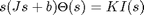
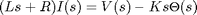
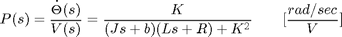
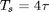
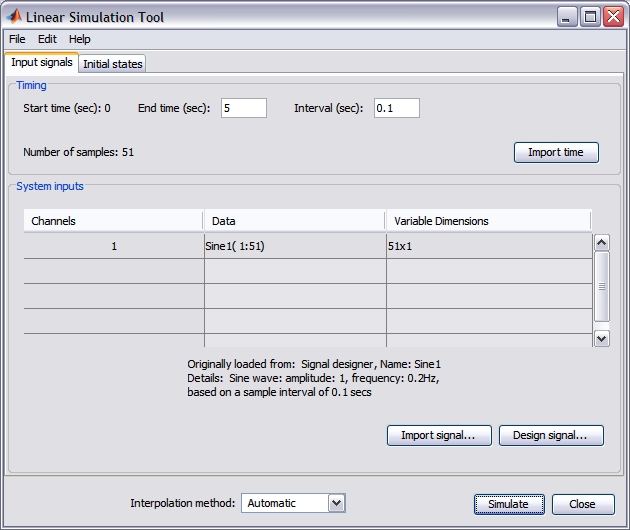
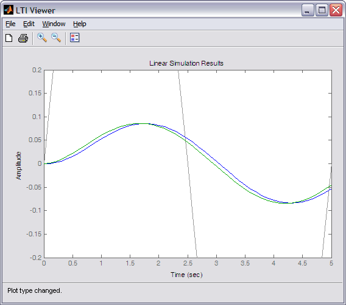

DC Motor Speed: System Analysis
Key MATLAB commands used in this tutorial are: tf , ltiview
Contents
From the main problem, the dynamic equations in the Laplace domain and the open-loop transfer function of the DC Motor are the following.
(1)
(2)
(3)
For the original problem setup and the derivation of the above equations, please refer to the DC Motor Speed: System Modeling page.
For a 1-rad/sec step reference, the design criteria are the following.
- Settling time less than 2 seconds
- Overshoot less than 5%
- Steady-state error less than 1%
Open-loop response
First create a new m-file and type in the following commands (refer to the main problem for the details of getting these commands).
J = 0.01;
b = 0.1;
K = 0.01;
R = 1;
L = 0.5;
s = tf('s');
P_motor = K/((J*s+b)*(L*s+R)+K^2);
Now let's see how the original open-loop system performs. Add the following ltiview command onto the end of the m-file and run it in the MATLAB command window. The string 'step' passed to the function specifies to generate a unit step response plot for the system P_motor. The range of numbers 0:0.1:5 specify that the step response plot should include data points for times from 0 to 5 seconds in steps of 0.1 seconds. The resulting plot is shown in the figure below, where you can view some of the system's characteristics by right clicking on the figure and choosing from the Characteristics menu such performance aspects as Settling Time and Steady State.
ltiview('step', P_motor, 0:0.1:5);

From the plot we see that when 1 Volt is applied to the system the motor can only achieve a maximum speed of 0.1 rad/sec, ten times smaller than our desired speed. Also, it takes the motor 2.07 seconds to reach its steady-state speed; this does not satisfy our 2 second settling time criterion.
LTI model characteristics
Since our open-loop transfer function has the form of a canonical second-order system, we should be able to accurately predict the step response characteristics observed above based on the transfer function's pole locations. You can graphically see the location of the poles (and zeros) of the P_motor system from within the LTI Viewer by right-clicking on the plot area and selecting Plot Types > Pole/Zero from the resulting menu. Performing this action will change the LTI Viewer to the following map where the blue x's identify the locations of poles.

From the above you can see that the open-loop transfer function has two real poles, one at s = -2 and one at s = -10. Since both poles are real, there is no oscillation in the step response (or overshoot) as we have already seen. Futhermore, since the one pole is 5 times more negative than the other, the slower of the two poles will dominate the dynamics. That is, the pole at s = -2 primarily determines the speed of response of the system and the system behaves similarly to a first-order system.
Let's see just how closely a first-order model approximates our original motor model. Enter the following command at the MATLAB command line to build a first-order transfer function with pole at s = -2 and steady-state value matching the original transfer function.
rP_motor = 0.1/(0.5*s+1)
rP_motor =
0.1
---------
0.5 s + 1
Continuous-time transfer function.
We can then import this new model into the LTI Viewer. This is accomplished by selecting Import from the File menu at the top of the LTI Viewer window. From the resulting window choose rP_motor from the Systems in Workspace area and then click the OK button. The LTI Viewer will now show plots of both the original and the reduced transfer functions. You can then switch back to step response plots by again choosing Plot Types from the right-click menu. You can remove the plot annotations by right-clicking on the plot and using the Characteristics submenu. You can also add a legend by clicking the legend icon on the toolbar. Now the LTI Viewer should appear as shown below.

From the above, we can see that a first-order approximation of our motor system is relatively accurate. The primary difference can be seen at t = 0 where a second order system will have a derivative of zero, but our first-order model will not.
With a first-order system, the settling time is equal to
(4)
where tau is the time constant which in this case is 0.5. Therefore, our first-order model has a settling time of 2 seconds which is close to the 2.07 seconds of our actual system. Throughout the rest of the pages of this example, different controllers will be designed to reduce the steady-state error significantly and the settling time slightly while still meeting the given overshoot requirement.
Response to other types of inputs
While the requirements for this example are given in terms of the system's step response, it is likely that the system will in practice be subject to other types of inputs. Even so, a system's step response can give insight into how the system will respond to other types of signals. In order to determine the system's specific response to other types of inputs, you can employ Simulink or the MATLAB command lsim. Furthermore, you can simulate the system's response to other types of inputs straight from the LTI Viewer. This is accomplished by right-clicking on the displayed plots and choosing Plot Types > Linear Simulation. The following window will then appear.

Within this window set the End time (sec) to "5" and the Interval (sec) to "0.1". Then under the System inputs section of the window, you can import an input signal, or design one from a select set of choices. In this instance, click the Design signal button and choose a Signal type of Sine wave from within the window that appears. Then change the Frequency (Hz) to "0.2" and leave the Amplitude and Duration (secs) as their default values. Then click the Insert button at the bottom of the Signal Designer window and the Simulate button at the bottom of the Linear Simulation Tool window. The responses of our two currently identified systems to the sine wave input are then produced in the LTI Viewer window. If you double-click on the y-axis of the plot, you can then change the limits to match the figure shown below.
